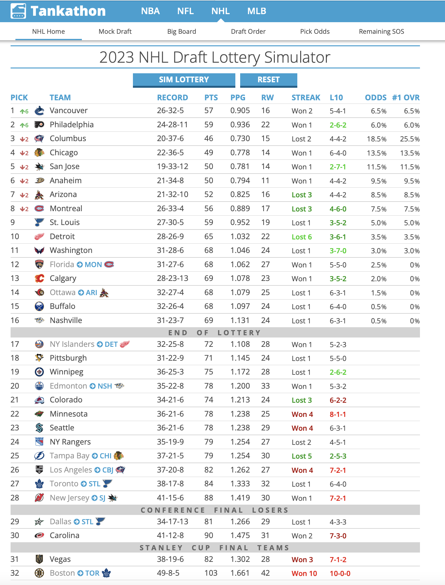

Code
library(tidyverse)
library(dplyr)
library(ggplot2)
library(readxl)
NHLDraftstats<-read.csv("NHLDraftstats.csv")
NHLDictionary<-read_excel("NHLDictionary.xlsx")
SkateWAR<-read_excel("Seasonal Skater WAR.xlsx")
knitr::kable(NHLDictionary)Analyzing performance of NHL Draft picks
Barrie Robison
March 18, 2023
In this assignment, we are going to practice creating visualizations for tabular data. Unlike previous assignments, however, this time we will all be using the same data sets. I’m doing this because I want everyone to engage in the same logic process and have the same design objectives in mind.
Imagine you are a high priced data science consultant. One of your good friends, Cassandra Canuck, is an Assistant General Manager for the Vancouver Canucks, a team in the National Hockey League with a long, long…. long history of futility.
Cassandra tells you her boss, General Manager Hans Doofenschmirtz, is considering trading this year’s first round draft pick for two second round picks and one third round pick from another team. For the purposes of this exercise, let’s set the 2023 NHL draft order using the Tankathon Simulator. The NHL uses a lottery system in which the teams lowest in the standings have the highest odds of getting the first overall pick. I’ll simulate the lottery now…
HOLY CRAP! The Vancouver Canucks jump up 6 spots, and will pick FIRST overall. Here is a screenshot:

Our official scenario is this:
Vancouver receives: The 7th pick in the second round (39th overall), the 10th pick in the second round (42nd overall), and the 10th pick in the third round (74th overall).
Detroit receives: The 1st pick in the first round (1st overall).
Doofenschmirtz reasons that more draft picks are better, and is inclined to make the trade. Cassandra isn’t so sure…
She asks you to create some data visualizations she can show to her boss that might help him make the best decision.
Create a new post in your portfolio for this assignment. Call it something cool, like NHL draft analysis, or Hockey Analytics, or John Wick….
Copy the data files from the repository, and maybe also the .qmd file.
Use the .qmd file as the backbone of your assignment, changing the code and the markdown text as you go.
How can we evaluate whether trading a first round pick for two second round picks and a third round pick is a good idea? One approach is to look at the historical performance of players from these draft rounds.
I’ve created a data set that will allow us to explore player performance as a function of draft position. If you are curious as to how I obtained and re-arranged these data, you can check out that tutorial here. For this assignment, though, I want to focus on the visualizations.
In this case, we have a dataframe with all the drafted players since 2000, their position, their draft year and position, and then rows for each season since being drafted (postdraft). The key variable here is NHLgames, which tells us how many games they played in the NHL each season since being drafted.
WAR<-SkateWAR%>%
group_by(Player, Season)%>%
summarise(TOI=sum(TOI),WAR=sum(WAR))%>%
mutate(seasonshort=2000+as.numeric(str_sub(Season, start=1, end=2)),
name=Player)
draftpos<-NHLDraftstats%>%
select(name, round, overall, draftyear, position)%>%
group_by(name, round, overall, draftyear, position)
draftposWAR <- full_join(WAR, draftpos, by = "name")
draftposWAR2<- unique(draftposWAR)%>%
mutate(postdraft=seasonshort-draftyear)%>%
filter(postdraft>-1)One thing to realize about professional hockey is that it is pretty rare for a player to play in the NHL right after being drafted. Players get drafted when they are 18 years old, and they usually play in the juniors, minor leagues, or the NCAA for a bit to further develop. Let’s use a scatterplot to visualize this phenomenon with the most recent draft classes.
The data from the most recent draft isn’t really helpful for our question. Let’s go back in time and use a draft year that has had some time to develop and reach their potential. How about 2018?
Hmmm… in addition to the problem of overplotting, we’ve got an additional issue here. We actually have two keys and one attribute. The attribute is NHLgames, and the keys are round and postdraft, but we are only using round.
Postdraft indicates the number of seasons after being drafted. We have several choices here. We can make a visualization that uses both keys, or we can somehow summarize the data for one of the keys.
For example, let’s say we just wanted to know the TOTAL number of NHL games played since being drafted.
drafttot2018<- draft2018%>%
group_by(playerId, round, overall, position, name)%>%
summarise(totgames=sum(NHLgames), totpoints=sum(points))
ggplot(drafttot2018, aes(x=round, y=totpoints))+
geom_point()
drafttot<- NHLDraftstats%>%
group_by(playerId, round, overall, position, name)%>%
summarise(totgames=sum(NHLgames), totpoints=sum(points))
ggplot(NHLDraftstats, aes(x=postdraft, y=points))+
geom_smooth(aes(color=as.factor(round)))
ggplot(draftposWAR2%>%filter(postdraft<6), aes(x=WAR))+
geom_histogram()+
facet_grid(postdraft~round)Fine, I guess, but we still have to deal with overplotting, and think about whether a scatterplot really helps us accomplish our task. For this figure do the following:
This approach might yield a better match with the scatterplot idiom. What if we ignore draft round, and use the player’s overall draft position instead?
For this figure, address the following:
We seem to be running into an issue in terms of overplotting. Scatterplots are great, but they work best for two quantitative attributes, and we have a situation with one or two keys and one quantitative attribute. The thing is, scatterplots can be very useful when part of our workflow involves modeling the data in some way. We’ll cover this kind of thing in future assignments, but just a bit of foreshadowing here:
Adding the smoothed line doesn’t eliminate the overplotting problem, but it does indicate that it exists. We’ll cover other potential solutions (including Cody’s violin plots!) to this issue later in the course, when we get to the notions of faceting and data reduction.
One of the best ways to deal with overplotting is to use our keys to SEPARATE and ORDER our data. Let’s do that now. I’ll stick with the summarized data for the 2018 draft year for now.
Epic. We now have a bar (column, really) chart with the key being player name, and the attribute being the total number of games played. We’ve SEPARATED the data using the spatial x-axis position channel, and aligned to that axis as well. But this visualization clearly sucks. You need to make it better by:
Stacked bar charts use two keys and one value. Can we leverage this idiom? Perhaps if we used both round and postdraft as our keys and NHLgames as our value…
The idea here is that we might be able to get a sense of the temporal pattern of NHL games after a player is drafted. Do first round picks join the NHL earlier? Do they stay in the NHL longer? That kind of thing.
ggplot(draft2018, aes(x = postdraft, y=points, fill=as.factor(-round)))+
geom_col(position = "stack")
NHLDraft <-NHLDraft %>%
mutate(descround = desc(as.factor(round)))
rounds<-c("darkred","red","pink", "violet", "lightblue","blue", "darkblue")
ggplot(NHLDraftstats, aes(x = postdraft, y=points, fill=as.factor(-round),
alpha = as.factor(-round)))+
geom_col(position = "stack")+
theme(legend.position = "none")+
facet_wrap(~position)This seems like it has some potential, but it definitely needs some work (by you):
We all know that Pie Charts are rarely a good choice, but let’s look at how to make one here. I’ll eliminate all the players drafted in 2018 who never played an NHL game, leaving us 80 players drafted in that year who made “THE SHOW”. Let’s look at how those 80 players were drafted:
Obviously this isn’t great, but can you state why? Write a little critique of this visualizaiton that:
Now let’s change this to account for the various years post draft:
Seems like there is something to work with here, but let’s compare this to a normalized bar chart:
Can you work with this to make it a useful visualization for your friend, Cassandra Canuck?
Could this be useful?
round1<-NHLDraft%>%
filter(round==1)
ggplot(NHLDraft, aes(y = reorder(name, overall), x = postdraft, fill = NHLgames)) +
geom_tile(width = .5, height = 5) +
theme(plot.margin = unit(c(0,0,0,0), "cm"),
axis.line = element_blank(),
axis.text = element_blank(),
axis.ticks = element_blank(),
panel.grid.major = element_blank(),
panel.grid.minor = element_blank())+
scale_fill_gradient(low = "blue", high = "red")
ggplot(NHLDraft, aes(y = overall, x = postdraft, z=NHLgames)) +
geom_tile(aes(fill=NHLgames)) Based on your visualizations, what would you advise regarding this trade proposal? Why?
---
title: "TUTORIAL 7"
subtitle: "Analyzing performance of NHL Draft picks"
author: "Barrie Robison"
date: "2023-03-18"
categories: [Tutorial, DataViz, Tables, Scatterplot, Barplot, Piechart]
image: "Cthulhuhockeycard.png"
code-fold: true
code-tools: true
description: "Should I trade these draft picks for this bag of magic beans...?"
execute:
eval: false
---
## OVERVIEW
In this assignment, we are going to practice creating visualizations for tabular data. Unlike previous assignments, however, this time we will all be using the same data sets. I'm doing this because I want everyone to engage in the same logic process and have the same design objectives in mind.
## SCENARIO
Imagine you are a high priced data science consultant. One of your good friends, Cassandra Canuck, is an Assistant General Manager for the Vancouver Canucks, a team in the National Hockey League with a long, long.... long history of futility.
Cassandra tells you her boss, General Manager Hans Doofenschmirtz, is considering trading this year's first round draft pick for two second round picks and one third round pick from another team. For the purposes of this exercise, let's set the 2023 NHL draft order using the [Tankathon Simulator](https://www.tankathon.com/nhl). The NHL uses a lottery system in which the teams lowest in the standings have the highest odds of getting the first overall pick. I'll simulate the lottery now...
HOLY CRAP! The Vancouver Canucks jump up 6 spots, and will pick FIRST overall. Here is a screenshot:

Our official scenario is this:
**Vancouver receives:** The 7th pick in the second round (39th overall), the 10th pick in the second round (42nd overall), and the 10th pick in the third round (74th overall).
**Detroit receives:** The 1st pick in the first round (1st overall).
Doofenschmirtz reasons that more draft picks are better, and is inclined to make the trade. Cassandra isn't so sure...
She asks you to create some data visualizations she can show to her boss that might help him make the best decision.
## DIRECTIONS
Create a new post in your portfolio for this assignment. Call it something cool, like NHL draft analysis, or Hockey Analytics, or John Wick....
Copy the data files from the repository, and maybe also the .qmd file.
Use the .qmd file as the backbone of your assignment, changing the code and the markdown text as you go.
## THE DATA
How can we evaluate whether trading a first round pick for two second round picks and a third round pick is a good idea? One approach is to look at the historical performance of players from these draft rounds.
I've created a data set that will allow us to explore player performance as a function of draft position. If you are curious as to how I obtained and re-arranged these data, you can check out that tutorial [here](../T6-APIsandJSON/index.qmd). For this assignment, though, I want to focus on the visualizations.
```{r}
library(tidyverse)
library(dplyr)
library(ggplot2)
library(readxl)
NHLDraftstats<-read.csv("NHLDraftstats.csv")
NHLDictionary<-read_excel("NHLDictionary.xlsx")
SkateWAR<-read_excel("Seasonal Skater WAR.xlsx")
knitr::kable(NHLDictionary)
```
In this case, we have a dataframe with all the drafted players since 2000, their position, their draft year and position, and then rows for each season since being drafted (`postdraft`). The key variable here is `NHLgames`, which tells us how many games they played in the NHL each season since being drafted.
## DATA CLEANING
```{r}
WAR<-SkateWAR%>%
group_by(Player, Season)%>%
summarise(TOI=sum(TOI),WAR=sum(WAR))%>%
mutate(seasonshort=2000+as.numeric(str_sub(Season, start=1, end=2)),
name=Player)
draftpos<-NHLDraftstats%>%
select(name, round, overall, draftyear, position)%>%
group_by(name, round, overall, draftyear, position)
draftposWAR <- full_join(WAR, draftpos, by = "name")
draftposWAR2<- unique(draftposWAR)%>%
mutate(postdraft=seasonshort-draftyear)%>%
filter(postdraft>-1)
```
## SIMPLE SCATTERPLOT
One thing to realize about professional hockey is that it is pretty rare for a player to play in the NHL right after being drafted. Players get drafted when they are 18 years old, and they usually play in the juniors, minor leagues, or the NCAA for a bit to further develop. Let's use a scatterplot to visualize this phenomenon with the most recent draft classes.
## EXPANDED SCATTERPLOT
The data from the most recent draft isn't really helpful for our question. Let's go back in time and use a draft year that has had some time to develop and reach their potential. How about 2018?
```{r}
draft2018<-draftposWAR2%>%
filter(draftyear==2018 & postdraft<6)
ggplot(draft2018, aes(x=round, y=WAR))+
geom_point()
ggplot(draftposWAR2, aes(x=postdraft, y = WAR))+
geom_smooth(aes(color=as.factor(round)))
```
Hmmm... in addition to the problem of overplotting, we've got an additional issue here. We actually have two keys and one attribute. The attribute is `NHLgames`, and the keys are `round` and `postdraft`, but we are only using round.
Postdraft indicates the number of seasons after being drafted. We have several choices here. We can make a visualization that uses both keys, or we can somehow summarize the data for one of the keys.
For example, let's say we just wanted to know the TOTAL number of NHL games played since being drafted.
```{r}
drafttot2018<- draft2018%>%
group_by(playerId, round, overall, position, name)%>%
summarise(totgames=sum(NHLgames), totpoints=sum(points))
ggplot(drafttot2018, aes(x=round, y=totpoints))+
geom_point()
drafttot<- NHLDraftstats%>%
group_by(playerId, round, overall, position, name)%>%
summarise(totgames=sum(NHLgames), totpoints=sum(points))
ggplot(NHLDraftstats, aes(x=postdraft, y=points))+
geom_smooth(aes(color=as.factor(round)))
ggplot(draftposWAR2%>%filter(postdraft<6), aes(x=WAR))+
geom_histogram()+
facet_grid(postdraft~round)
```
Fine, I guess, but we still have to deal with overplotting, and think about whether a scatterplot really helps us accomplish our task. For this figure do the following:
1. **Overplotting.** All those points on the y=0 line represent about 32 players each. Can you you think of a way that adding extra channels might help?
2. **Labelling.** Can we create a solid figure caption and better axis labels for this figure? In your caption, please specify the task(s) the visualizaiton is intended to facilitate, as well as the marks, channels, and key-value pairs used.
3. **Key-Value pairs:** Looks like we are using "round" as a continuous variable. Can we change this to an ordered factor?
## SCATTERPLOT WITH OVERALL DRAFT POSITION
This approach might yield a better match with the scatterplot idiom. What if we ignore draft round, and use the player's overall draft position instead?
```{r}
ggplot(draft2018, aes(x=overall, y=WAR))+
geom_point()
```
For this figure, address the following:
1. We are trying to address the notion of trading a pick from round 1 for picks from round 2 and 3. Add visual channels to this plot that will help us make that decision.
2. Create a caption and better axis labels for this figure.
3. What if we wanted to use more than just the 2018 draft class?
## SCATTERPLOT SUMMARY
We seem to be running into an issue in terms of overplotting. Scatterplots are great, but they work best for two quantitative attributes, and we have a situation with one or two keys and one quantitative attribute. The thing is, scatterplots can be very useful when part of our workflow involves modeling the data in some way. We'll cover this kind of thing in future assignments, but just a bit of foreshadowing here:
```{r}
ggplot(drafttot2018, aes(x=round, y=totpoints))+
geom_point()+
geom_smooth()+
facet_wrap(~position)
```
Adding the smoothed line doesn't eliminate the overplotting problem, but it does indicate that it exists. We'll cover other potential solutions (including Cody's violin plots!) to this issue later in the course, when we get to the notions of faceting and data reduction.
## SIMPLE BAR CHART
One of the best ways to deal with overplotting is to use our keys to SEPARATE and ORDER our data. Let's do that now. I'll stick with the summarized data for the 2018 draft year for now.
```{r}
ggplot(draftposWAR2, aes(x = reorder(name,overall), y=WAR))+
geom_col(aes(color=as.factor(round)))
```
Epic. We now have a bar (column, really) chart with the key being player `name`, and the attribute being the total number of games played. We've SEPARATED the data using the spatial x-axis position channel, and aligned to that axis as well. But this visualization clearly sucks. You need to make it better by:
1. Adding a visual channel indicating draft round.
2. Fixing the order of the x axis.
3. Making a caption and better axis labels.
4. Fixing the values of the x axis labels so they aren't such a mess.
## STACKED BAR?
Stacked bar charts use two keys and one value. Can we leverage this idiom? Perhaps if we used both `round` and `postdraft` as our keys and NHLgames as our value...
The idea here is that we might be able to get a sense of the temporal pattern of NHL games after a player is drafted. Do first round picks join the NHL earlier? Do they stay in the NHL longer? That kind of thing.
```{r}
ggplot(draft2018, aes(x = postdraft, y=points, fill=as.factor(-round)))+
geom_col(position = "stack")
NHLDraft <-NHLDraft %>%
mutate(descround = desc(as.factor(round)))
rounds<-c("darkred","red","pink", "violet", "lightblue","blue", "darkblue")
ggplot(NHLDraftstats, aes(x = postdraft, y=points, fill=as.factor(-round),
alpha = as.factor(-round)))+
geom_col(position = "stack")+
theme(legend.position = "none")+
facet_wrap(~position)
```
This seems like it has some potential, but it definitely needs some work (by you):
1. You know the drill by now. Caption! Labels!
2. Improve the color palette.
3. Do we really only want data from the 2018 draft class?
4. Consider the order of rounds within the stack (glyph). Which round is most important? Change the order within the glyphs to reflect this.
## PIE CHARTS / NORMALIZED BAR CHARTS
We all know that Pie Charts are rarely a good choice, but let's look at how to make one here. I'll eliminate all the players drafted in 2018 who never played an NHL game, leaving us 80 players drafted in that year who made "THE SHOW". Let's look at how those 80 players were drafted:
```{r}
playedNHL2018 <- drafttot2018%>%
filter(totgames>0)
ggplot(playedNHL2018, aes(x = "", fill = factor(round))) +
geom_bar(width = 1) +
coord_polar(theta = "y")
```
Obviously this isn't great, but can you state why? Write a little critique of this visualizaiton that:
1. Considers a player who played hundreds of games over their first five years vs a player who played one game in five years.
2. Evaluates the relative value of a second round pick and a third round pick.
Now let's change this to account for the various years post draft:
```{r}
seasonplayedNHL2018 <- draft2018%>%
filter(NHLgames>0)
ggplot(seasonplayedNHL2018, aes(x = "", fill = factor(round))) +
geom_bar(width = 1) +
coord_polar(theta = "y")+
facet_wrap(~postdraft)
```
Seems like there is something to work with here, but let's compare this to a normalized bar chart:
```{r}
ggplot(draft2018, aes(x = postdraft, y=NHLgames, fill=as.factor(round)))+
geom_col(position = "fill")
ggplot(draft2018, aes(x = postdraft, y=NHLgames, fill=overall))+
geom_col(position = "fill")
```
Can you work with this to make it a useful visualization for your friend, Cassandra Canuck?
## HEATMAP?
Could this be useful?
```{r}
round1<-NHLDraft%>%
filter(round==1)
ggplot(NHLDraft, aes(y = reorder(name, overall), x = postdraft, fill = NHLgames)) +
geom_tile(width = .5, height = 5) +
theme(plot.margin = unit(c(0,0,0,0), "cm"),
axis.line = element_blank(),
axis.text = element_blank(),
axis.ticks = element_blank(),
panel.grid.major = element_blank(),
panel.grid.minor = element_blank())+
scale_fill_gradient(low = "blue", high = "red")
ggplot(NHLDraft, aes(y = overall, x = postdraft, z=NHLgames)) +
geom_tile(aes(fill=NHLgames))
```
## OTHER STUFF TO CONSIDER
1. Do these visualizations change as a function of player position?
2. Is the number of NHL games played really the best metric to use?
## CONCLUSION
Based on your visualizations, what would you advise regarding this trade proposal? Why?